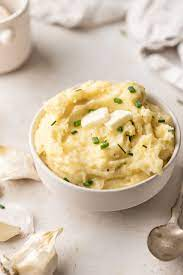

Garlicky Potatoes

Description
An amazing side dish for anyone who loves garlic.
Ingredients
- 4 pounds potatoes, peeled and cut into chunks
- 4 cups water
- 2 cups vegetable broth
- 4 cloves garlic, thinly sliced, or more to taste
- 1 cup rice milk, or as needed/li>
Steps
- Combine potatoes, water, broth, and garlic in a pot.
Bring to a boil; reduce heat to medium-low and cook
until soft, about 15 minutes.
- Drain potatoes and reserve cooking water. Return potatoes
to the pot and stir over medium heat until any excess
moisture is cooked off, about 1 minute.
- Remove pot from heat. Add some reserved cooking water
and rice milk, alternating between them, while stirring
vigorously. Stop before potatoes become too soggy or
liquid begins to accumulate in the pot.